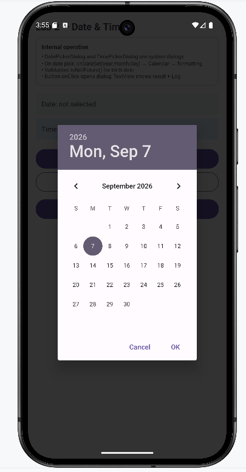

Guía Maestra de Capturas de Pantalla
Cada tarjeta detalla con precisión: archivo XML, clase Java/Kotlin asociada, acción en emulador y ruta de destino. Al guardar el archivo en tutorial/assets/images/ la imagen se renderizará automáticamente.
Vista XML: res/layout/activity_main.xml
Clase: MainActivity.java
Captura: Pantalla de login con teclado y campos completados.

Vista XML: res/layout/activity_register.xml
Clase: RegisterActivity.java
Captura: Formulario de registro con 6 campos especializados.

Vista XML: res/layout/activity_home.xml
Clase: HomeActivity.java
Captura: Malla de tarjetas MaterialCardView de los 10 laboratorios.

Vista XML: activity_text_inputs.xml
Clase: TextInputsActivity.java
Captura: Vista general en Android Studio o emulador de los 6 inputs.

Vista XML: activity_date_time.xml
Clase: DateTimeActivity.java
Captura: DatePickerDialog modal abierto en el emulador.

Vista XML: activity_dialog.xml
Clase: DialogToastActivity.java
Captura: AlertDialog modal de confirmación con respuesta Toast.